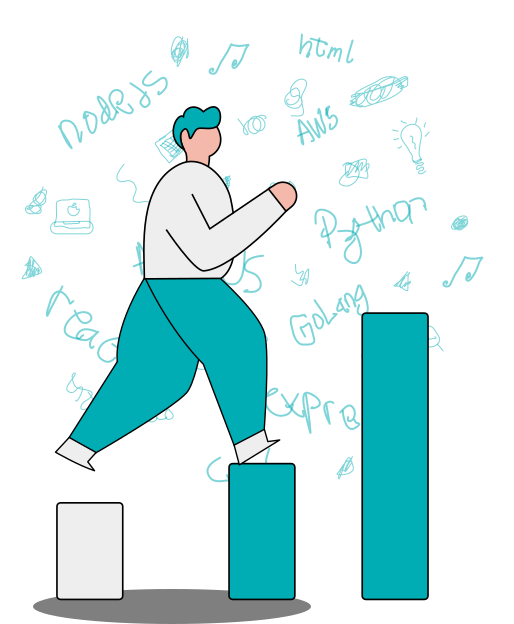
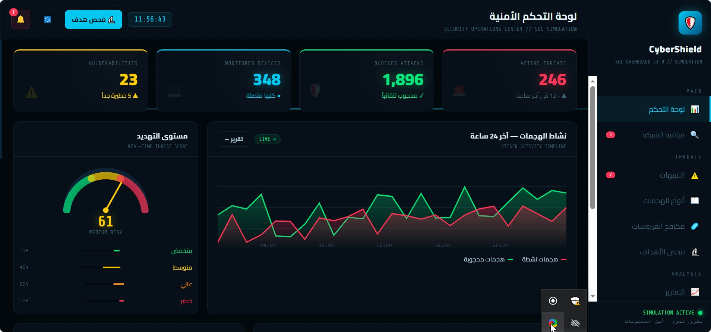
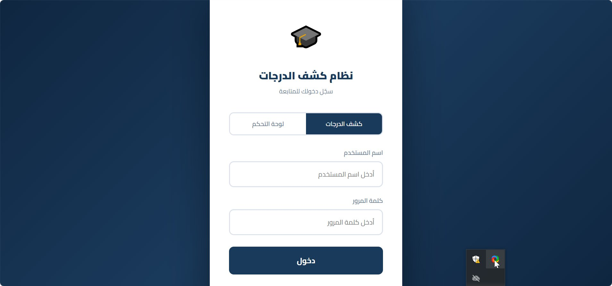
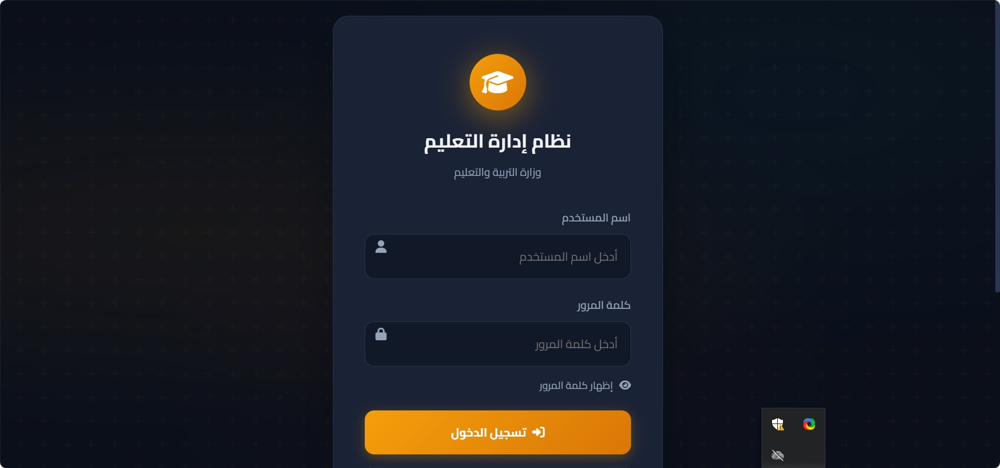

Software Engineer
Turning complex ideas into sleek, elegant digital experiences.
Specialized in web & mobile development.

Hey, I'm Youssef — a Software Engineer who loves turning complex ideas into simple, sleek solutions. Currently diving into mobile app development to level up my skills. I enjoy building cool stuff, experimenting with new tech, and making things look and feel great.

A real-time Security Operations Center dashboard with live threat monitoring, attack activity timeline, and vulnerability tracking — built for enterprise cybersecurity teams.
Visit Live Site ↗
A Ministry of Education management portal with sleek dark-mode login — supporting Arabic RTL layout and modern authentication flows.
Visit Live Site ↗
A student grade tracking system with dual-role access, built for seamless academic record management with a clean, professional interface.
Visit Live Site ↗Have a project in mind? Let's build something great together.